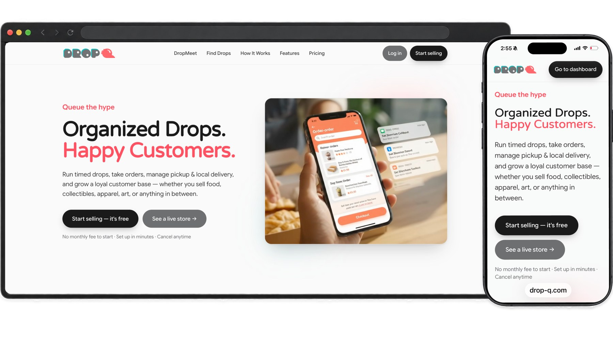
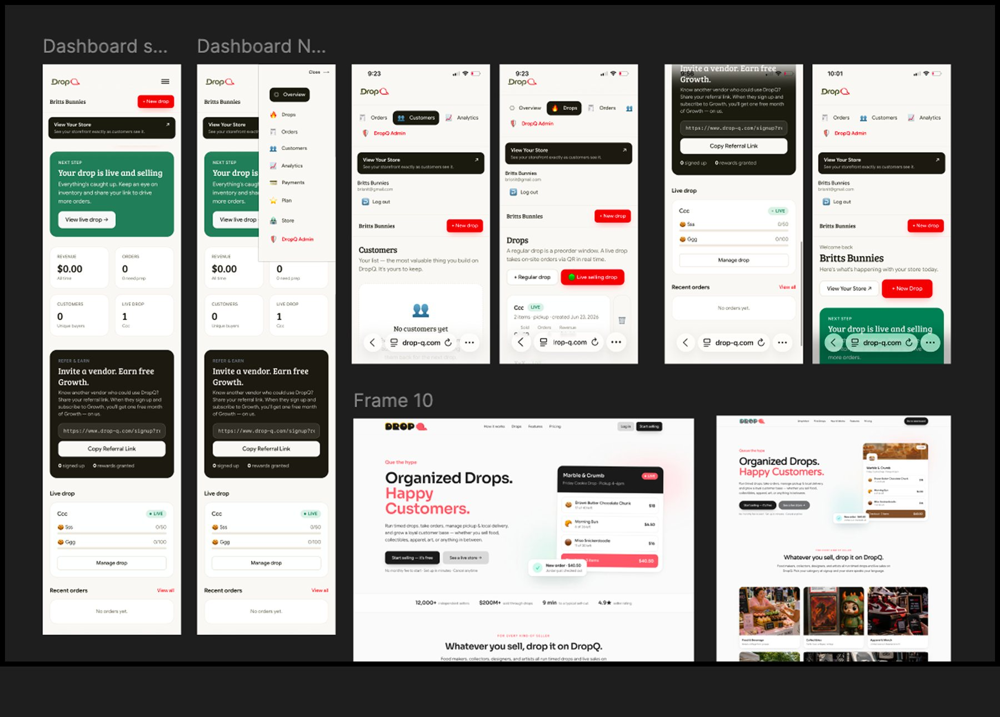
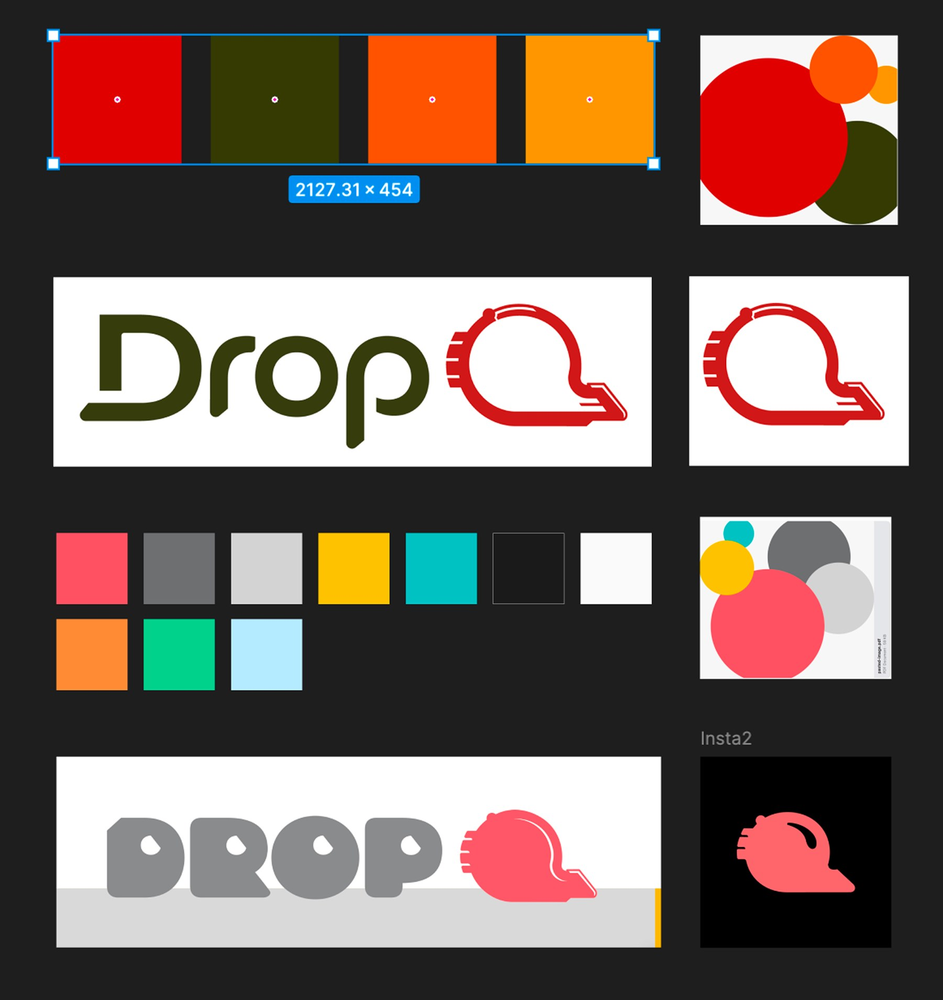
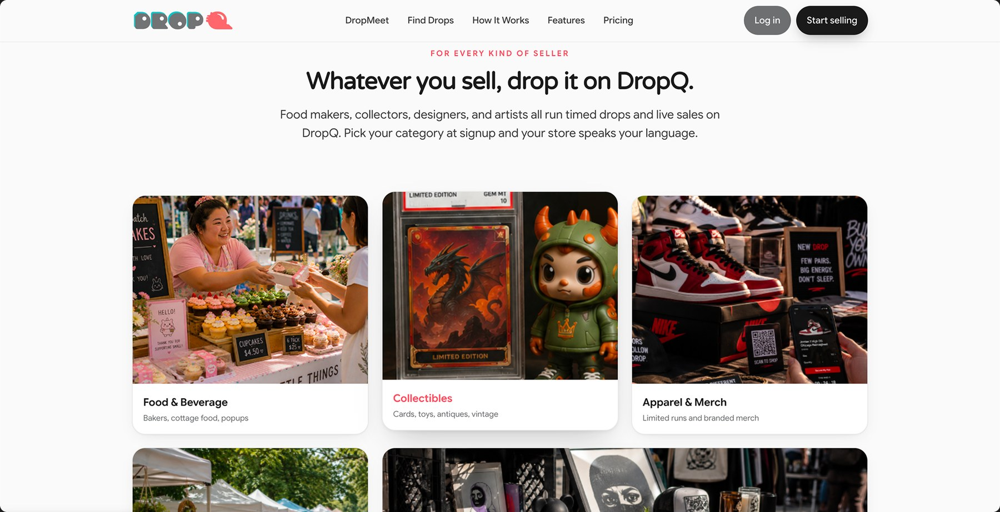
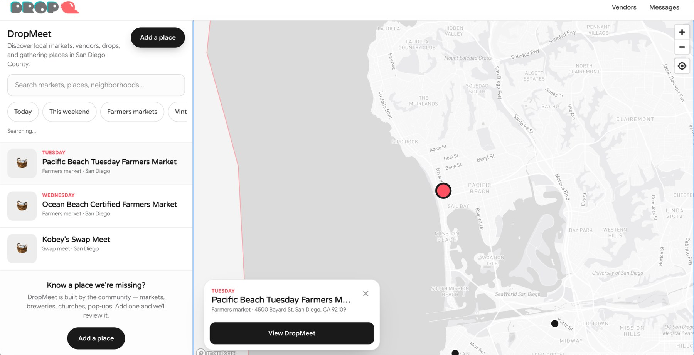
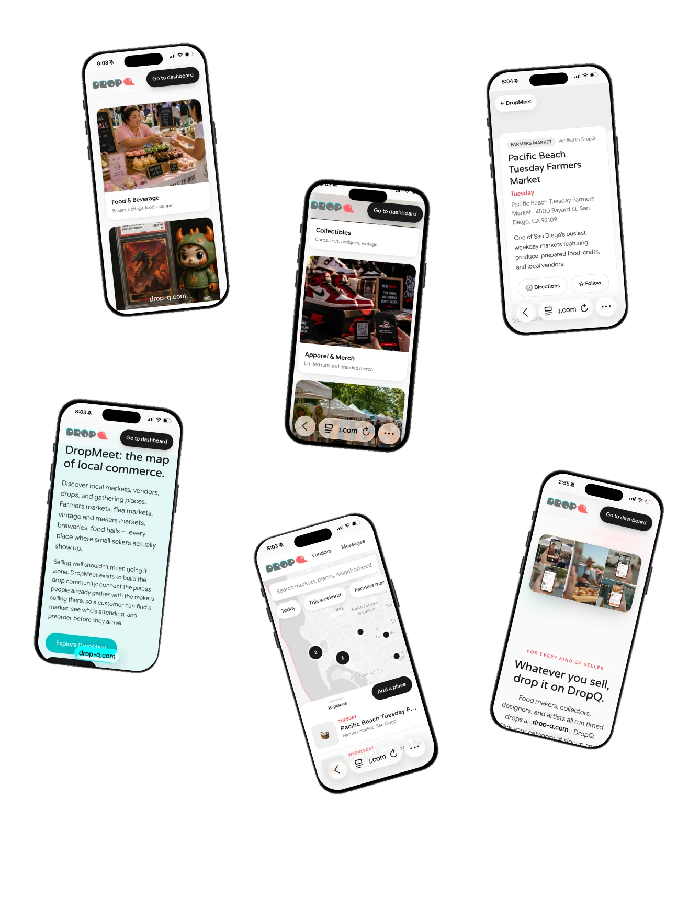

DropQ
Queue the hype.

Overview
Independent sellers run limited drops on a stack of apps that do not talk to each other: a form for orders, a payment app, a spreadsheet, a group text. DropQ replaces that with timed releases, inventory that cannot oversell, and a customer list the seller actually owns.
The problem
Your business runs on a dozen apps that don’t talk to each other.
Instagram for marketing. A link in bio for the catalogue. A spreadsheet for orders. A payment app. A group text for the waitlist. It works until a drop goes viral, and then it fails at the worst possible moment.

The Opportunity
We set out to help cottage food vendors sell their goods, grow a following, and build a community with fellow vendors and customers.

What We Learned
Our first drop worked, but it revealed a need for better communication between vendors and customers. We added a messaging stream so vendors could stay connected with customers and track every sale and new customer in one place.
The Direction
I designed and built the entire app with AI, using ChatGPT and Claude in VS Code. Screens I created in Figma guided the visual direction, while detailed, iterative conversations helped strengthen the backend. The project showed me how much AI can amplify a designer’s judgment, craft, and ability to bring an idea to life.

Designing the Experience
We refined the app through real-world testing: purchasing from multiple drops and speaking with vendors afterward. Those insights helped us simplify the buying journey and improve how vendors manage sales and communicate with customers.
The Visual System
My partner brings a traditional graphic design background, and I gave him creative freedom to shape the color palette, typography, and logo.

The Final Experience
DropQ is live with seven vendors, and our go-to-market plan targets 100 by the end of 2026. Next, we’re launching in-person meetups to build community and grow participation among vendors and customers.
The Impact
We built DropQ for an underserved market, with growing enthusiasm from San Diego’s pop-up community. That early interest is helping shape the platform as we work toward broader adoption.
The Takeaway
Vendors are launching spontaneous drops on their own, an encouraging sign that the experience is easy to use.



Next project
NIPR
A licensing task that could mean fourteen open windows, rebuilt as one guided sequence.